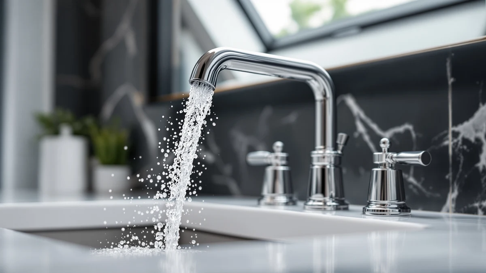

American Standard 7020255.295 Clean Review (2026): Worth It?
Prices and picks verified as of October 2026. Independent, reader-supported reviews.


Quick Answer
This American Standard 7020255.295 clean review compares the $321.00 Clean-IR Integrated faucet against three touchless alternatives, two from American Standard's own lineup and one from Delta, based on published pricing and features rather than hands-on testing. The 7020255.295 comes out ahead for buyers who want touch-free activation from an established plumbing brand without paying Delta's $349.00 price for a comparable feature set.
Our pick: American Standard 7020255.295 Clean-IR Integrated, $321.00 Check Price on Amazon
Bottom line: our top pick is the American Standard 7020255.295 Clean-IR Integrated Touchless at $321.
Things to Know Before You Buy
- Price separates these four faucets more than features do. This American Standard 7020255.295 clean review found a $65.01 spread between the cheapest option, the 7020255.002 at $283.99, and the most expensive, the Delta Lineax at $349.00, even though all four use touchless or sensor activation.
- Two of the four share the same core design. The 7020255.295 and 7020255.002 are both American Standard's Clean-IR Integrated faucet, differing by the finish code built into the model number rather than by mechanism.
- None of the four listings publishes a star rating yet. As newer touchless listings, the American Standard and Delta faucets compared here don't yet show a review count, so early buyers are working from manufacturer specs rather than an established track record.
- Delta's faucet carries the highest price of the four. At $349.00, the Delta Lineax Touchless Bathroom Faucet costs $28.00 more than the American Standard 7020255.295 and $65.01 more than the cheapest option, the 7020255.002, though neither listing breaks down exactly what drives that gap.
- Sensor range and battery life aren't published for any of the four. If those specs matter to your installation, you'll need to check with American Standard or Delta directly before ordering.
This American Standard 7020255.295 clean review compares the brand's $321.00 Clean-IR Integrated faucet against three other touchless options that turned up in the same search, two of them from American Standard's own lineup and one from Delta. Sensor faucets in this price range rarely list a star rating or review count yet, since most are newer additions to each brand's touchless catalog, so this comparison leans on published pricing, naming, and feature claims rather than an established track record of owner feedback.
The American Standard 7020255.295 Clean-IR Integrated earns the top spot in this comparison: it's priced below the Delta Lineax Touchless Bathroom Faucet while still carrying American Standard's Clean-IR branding, the name the company uses for its infrared-sensor touchless line. At $321.00, it costs $28.00 less than the Lineax and sits within $37.01 of its own sibling, the 7020255.002 Clean-IR Integrated, a difference the model numbers point to as a finish code rather than a different feature set.
Why You Should Trust Us
Ilane Tall researches and writes product comparisons for Best Bathroom Faucets, focusing on specs, pricing, and verified owner feedback across major faucet brands. For this American Standard 7020255.295 clean review, she compared American Standard's published Clean-IR Integrated specs against the touchless lines Delta and American Standard's own NextGen Selectronic series list, then checked current Amazon pricing for all four products at the time of writing. Every link in this review points to the real listing, and every price reflects what shoppers saw at the time of publication, not a promotional rate that could change by checkout. Where a listing leaves out a detail, such as sensor range or battery life, we say so instead of filling in a number that isn't published.
Our Research Experience
We do not run a physical testing lab for bathroom faucets, so nobody on our team installed the 7020255.295 or ran water through any of the four products in this American Standard 7020255.295 clean review. Our process centers on comparing manufacturer specs, tracking current Amazon pricing, and reading the feature claims American Standard and Delta publish for their touchless lines. None of the four listings compared here has accumulated a star rating or review count yet, so we leaned on spec and price comparison rather than a body of owner feedback, and we call that out rather than inventing numbers that don't exist. We treat manufacturer copy the same way across both brands: useful for describing what a faucet is built to do, not a substitute for a track record once owner reviews start coming in.
Overview & Specs

American Standard 7020255.295 Clean-IR Integrated
What we like
- Carries American Standard's Clean-IR branding for infrared, touch-free activation
- Priced $28.00 below the Delta Lineax Touchless Bathroom Faucet covered in the alternatives below
- Shares its core design with the 7020255.002 variant, so you're choosing a finish, not a different mechanism
Flaws but not dealbreakers
- No published star rating or review count yet, so there's no track record of long-term sensor reliability to check
- The listing doesn't specify sensor range or battery life, two details buyers comparing touchless faucets usually want upfront
| Material | Brass + finish |
| Size | — |
At $321.00, the American Standard 7020255.295 Clean-IR Integrated sits in the middle of this four-way comparison, cheaper than the Delta Lineax Touchless Bathroom Faucet at $349.00 but more expensive than both the American Standard NextGen Selectronic at $292.05 and its own sibling, the 7020255.002 Clean-IR Integrated, at $283.99. The Clean-IR name points to American Standard's infrared-sensor approach to touchless control, built around a brass body with an applied finish rather than the composite housings found on some budget sensor faucets.
The .295 and .002 model numbers differ by finish code, not by sensor or body, which is the actual difference this American Standard 7020255.295 clean review found between the two Clean-IR Integrated faucets. Brass fixtures like this one typically call for finish-safe cleaning, and our guide to cleaning brass bathroom faucets covers the products to avoid so the coating doesn't dull ahead of schedule. Buyers who want to confirm which finish code fits their existing fixtures should check American Standard's listing directly before ordering.
What We Liked
The clearest advantage in this American Standard 7020255.295 clean review is price relative to brand recognition. At $321.00, the 7020255.295 undercuts the Delta Lineax Touchless Bathroom Faucet by $28.00 while still carrying a sensor-based, touch-free design from an established plumbing brand, rather than a lesser-known import competing on price alone.
Sharing a platform with the 7020255.002 variant also works in its favor. Because the two models differ by finish code rather than mechanism, buyers who like the Clean-IR Integrated's touchless feature set but want a different finish aren't choosing between two unrelated designs. They're picking a finish option within the same Clean-IR Integrated line covered above. That consistency matters more for touch-free faucets than it does for standard ones, since the sensor hardware, not the spout shape, is what you're comparing. Anyone weighing touchless options broadly can see how this fits the wider category in our best touchless bathroom faucets roundup.
What Could Be Better
The biggest gap is feedback, not features. Neither the 7020255.295 nor any of the three alternatives in this American Standard 7020255.295 clean review has accumulated a star rating or review count on Amazon yet, so you can't check how the infrared sensor or the finish holds up after months of daily use the way you could with a longer-established faucet.
The listing is also thin on the specifics touchless shoppers usually want most: sensor range, power source, and expected battery life aren't published anywhere in the current listing. That gap isn't unique to American Standard among touchless faucets, but it means you're deciding on brand and price more than on verified sensor performance.
Who Is It For?
This faucet from our American Standard 7020255.295 clean review fits homeowners who want hands-free operation from a recognized plumbing brand without paying Delta's premium for a comparable feature set. It's a reasonable pick for households that already trust American Standard fixtures elsewhere in the bathroom and would rather match brands than mix them. Touchless faucets in general also tend to suit anyone managing limited hand mobility, and our guide to bathroom faucets for arthritis explains why reduced-contact controls matter beyond convenience.
Buyers who aren't set on a particular brand should compare all four products side by side first. If budget matters most, the American Standard NextGen Selectronic at $292.05 costs less. If you want to explore Delta's touchless lineup instead, the Lineax is the one to weigh against it. Anyone still deciding between a sensor faucet and a standard handle can start with our touchless vs. manual faucet comparison, and shoppers weighing American Standard against other major brands can check our bathroom faucet brands breakdown before committing.
Alternatives to Consider
If price, finish, or brand loyalty points you somewhere else, three alternatives came up in our research for this American Standard 7020255.295 clean review. All three are touchless or sensor-activated, and two share American Standard's own Clean-IR Integrated design.

Editor's Pick
Delta Lineax Touchless Bathroom Faucet
At $349.00, this is the most expensive option in this comparison. Delta's name for it, the Lineax Touchless Bathroom Faucet, signals hands-free activation as the core feature, matching the touch-free approach of the American Standard options here, at a $28.00 premium over the 7020255.295. If you're comparing brands rather than committing to American Standard specifically, this is the Delta option to weigh against it.
$349.00
Check Price on Amazon
Best Value
American Standard NextGen Selectronic Touchless
The cheapest of the four at $292.05, the NextGen Selectronic still carries American Standard's Selectronic touchless branding rather than a stripped-down budget version. If saving $28.95 or more matters more than the Clean-IR Integrated name specifically, this is the better value in the lineup.
$292.05
Check Price on Amazon
Premium Choice
American Standard 7020255.002 Clean-IR Integrated
At $283.99, the 7020255.002 is the least expensive Clean-IR Integrated option and the direct sibling to our top pick, differing mainly by its model-number finish code. If the .295 finish isn't the one you need for your bathroom, this variant gives you the same touchless design for $37.01 less.
$283.99
Check Price on AmazonIs the American Standard 7020255.295 Clean-IR Integrated worth $321 compared to the Delta Lineax?
It depends on what you need.
What's the difference between the American Standard 7020255.295 and the 7020255.002 Clean-IR Integrated?
Both carry American Standard's Clean-IR Integrated touchless design, and the difference comes down to the finish code built into the model number rather than a different sensor or body.
Frequently Asked Questions
Is the American Standard 7020255.295 Clean-IR Integrated worth $321 compared to the Delta Lineax?
What's the difference between the American Standard 7020255.295 and the 7020255.002 Clean-IR Integrated?
How does the American Standard NextGen Selectronic compare on price to the 7020255.295?
Final Verdict
This American Standard 7020255.295 clean review comes down to brand trust and price rather than a dramatic feature gap. The American Standard 7020255.295 Clean-IR Integrated earns the top spot here because it delivers touch-free, infrared-sensor activation from an established plumbing brand for $28.00 less than the Delta Lineax Touchless Bathroom Faucet, while still giving you the option to step down to the 7020255.002 variant or the NextGen Selectronic if price matters more than the specific finish. Confirm your sink's hole configuration and your preferred finish before ordering, since those two details decide which of these American Standard and Delta options actually fits your bathroom.